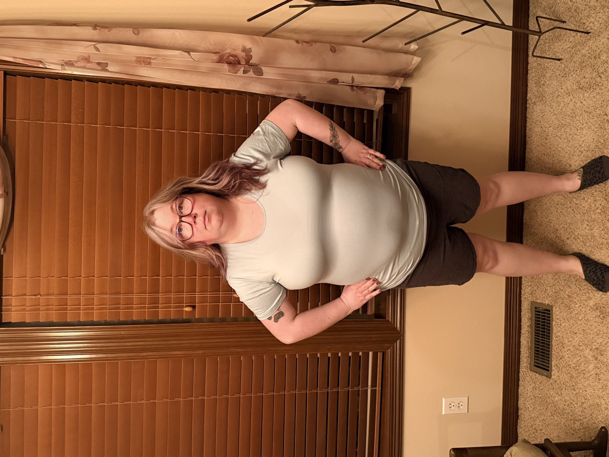
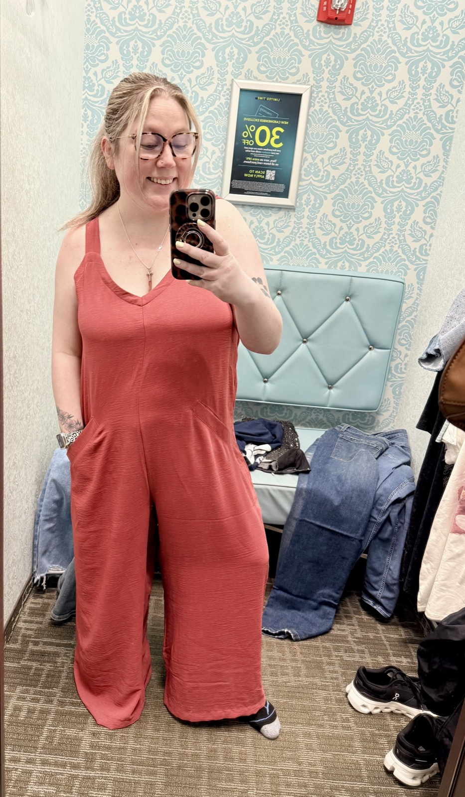

Real Person · Real Numbers
Cearra's
Story
She didn't just get smaller — she got metabolically younger.

BEFORE · 8/2025

NOW · 4/2026
−45 lb
Total Weight Loss
52% → 40.6%
Body Fat · −11.4 pts
100%+ Lean Kept
Metabolically younger
Scan to see
her transformation